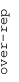
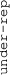

These results are also available as PDF and EPS documents.
Depending on your display resolution, scrolling or zooming may be necessary.
|  |
| 3 |
| 0 |
| -3 |
|  |
| GO_HYDROLASE_ACTIVITY_ACTING_ON_ACID_PHOSPHORUS_NITROGEN_BONDS GO_HYDROLASE_ACTIVITY_ACTING_ON_ACID_PHOSPHORUS_NITROGEN_BONDS | |||||||||||
| GO_HOMOPHILIC_CELL_ADHESION_VIA_PLASMA_MEMBRANE_ADHESION_MOLECULES GO_HOMOPHILIC_CELL_ADHESION_VIA_PLASMA_MEMBRANE_ADHESION_MOLECULES | |||||||||||
| GO_EXTRACELLULAR_MATRIX_STRUCTURAL_CONSTITUENT GO_EXTRACELLULAR_MATRIX_STRUCTURAL_CONSTITUENT | |||||||||||
| GO_MUSCLE_FILAMENT_SLIDING GO_MUSCLE_FILAMENT_SLIDING | |||||||||||
| GO_SUGAR_TRANSMEMBRANE_TRANSPORTER_ACTIVITY GO_SUGAR_TRANSMEMBRANE_TRANSPORTER_ACTIVITY | |||||||||||
| GO_INTERLEUKIN_10_PRODUCTION GO_INTERLEUKIN_10_PRODUCTION | |||||||||||
| GO_SPECIFIC_GRANULE GO_SPECIFIC_GRANULE | |||||||||||
| GO_G_PROTEIN_COUPLED_NUCLEOTIDE_RECEPTOR_ACTIVITY GO_G_PROTEIN_COUPLED_NUCLEOTIDE_RECEPTOR_ACTIVITY | |||||||||||
| GO_OSTEOCLAST_DEVELOPMENT GO_OSTEOCLAST_DEVELOPMENT | |||||||||||
| GO_NEUROTRANSMITTER_TRANSMEMBRANE_TRANSPORTER_ACTIVITY GO_NEUROTRANSMITTER_TRANSMEMBRANE_TRANSPORTER_ACTIVITY | |||||||||||
| GO_ACROSOMAL_VESICLE GO_ACROSOMAL_VESICLE | |||||||||||
| GO_LYMPH_VESSEL_DEVELOPMENT GO_LYMPH_VESSEL_DEVELOPMENT | |||||||||||
| GO_LAMELLIPODIUM GO_LAMELLIPODIUM | |||||||||||
| GO_RECYCLING_ENDOSOME GO_RECYCLING_ENDOSOME | |||||||||||
| GO_AUTOPHAGOSOME_MEMBRANE GO_AUTOPHAGOSOME_MEMBRANE | |||||||||||
| GO_ACETYLTRANSFERASE_ACTIVITY GO_ACETYLTRANSFERASE_ACTIVITY | |||||||||||
| GO_VESICLE_TARGETING GO_VESICLE_TARGETING | |||||||||||
| GO_2_OXOGLUTARATE_DEPENDENT_DIOXYGENASE_ACTIVITY GO_2_OXOGLUTARATE_DEPENDENT_DIOXYGENASE_ACTIVITY | |||||||||||
| GO_CHROMOSOME_CENTROMERIC_REGION GO_CHROMOSOME_CENTROMERIC_REGION | |||||||||||
| GO_CULLIN_RING_UBIQUITIN_LIGASE_COMPLEX GO_CULLIN_RING_UBIQUITIN_LIGASE_COMPLEX | |||||||||||
| GO_MEDIATOR_COMPLEX GO_MEDIATOR_COMPLEX | |||||||||||
| GO_MIRNA_BINDING GO_MIRNA_BINDING | |||||||||||
| GO_PROTEIN_LOCALIZATION_TO_MITOCHONDRION GO_PROTEIN_LOCALIZATION_TO_MITOCHONDRION | |||||||||||
| GO_CELLULAR_RESPONSE_TO_TOPOLOGICALLY_INCORRECT_PROTEIN GO_CELLULAR_RESPONSE_TO_TOPOLOGICALLY_INCORRECT_PROTEIN | |||||||||||
| GO_RNA_BINDING_INVOLVED_IN_POSTTRANSCRIPTIONAL_GENE_SILENCING GO_RNA_BINDING_INVOLVED_IN_POSTTRANSCRIPTIONAL_GENE_SILENCING | |||||||||||
| GO_STRUCTURAL_CONSTITUENT_OF_EYE_LENS GO_STRUCTURAL_CONSTITUENT_OF_EYE_LENS | |||||||||||
| GO_ODORANT_BINDING GO_ODORANT_BINDING | |||||||||||
| GO_KERATIN_FILAMENT GO_KERATIN_FILAMENT | |||||||||||
| GO_G_PROTEIN_COUPLED_AMINE_RECEPTOR_ACTIVITY GO_G_PROTEIN_COUPLED_AMINE_RECEPTOR_ACTIVITY | |||||||||||
| GO_HORMONE_ACTIVITY GO_HORMONE_ACTIVITY | |||||||||||
| GO_NEURON_FATE_COMMITMENT GO_NEURON_FATE_COMMITMENT | |||||||||||
| GO_HEMOGLOBIN_COMPLEX GO_HEMOGLOBIN_COMPLEX | |||||||||||
| GO_ENDOPEPTIDASE_REGULATOR_ACTIVITY GO_ENDOPEPTIDASE_REGULATOR_ACTIVITY | |||||||||||
| GO_CHEMOKINE_ACTIVITY GO_CHEMOKINE_ACTIVITY | |||||||||||
| GO_DEFENSE_RESPONSE_TO_GRAM_POSITIVE_BACTERIUM GO_DEFENSE_RESPONSE_TO_GRAM_POSITIVE_BACTERIUM | |||||||||||
| GO_PEPTIDE_RECEPTOR_ACTIVITY GO_PEPTIDE_RECEPTOR_ACTIVITY | |||||||||||
| GO_TYPE_I_INTERFERON_RECEPTOR_BINDING GO_TYPE_I_INTERFERON_RECEPTOR_BINDING | |||||||||||
| GO_SPLICEOSOMAL_COMPLEX GO_SPLICEOSOMAL_COMPLEX | |||||||||||
| GO_OXIDATIVE_PHOSPHORYLATION GO_OXIDATIVE_PHOSPHORYLATION | |||||||||||
| GO_REGULATION_OF_HEMATOPOIETIC_PROGENITOR_CELL_DIFFERENTIATION GO_REGULATION_OF_HEMATOPOIETIC_PROGENITOR_CELL_DIFFERENTIATION | |||||||||||
| GO_DNA_TEMPLATED_TRANSCRIPTION_ELONGATION GO_DNA_TEMPLATED_TRANSCRIPTION_ELONGATION | |||||||||||
| GO_PROTEIN_METHYLTRANSFERASE_ACTIVITY GO_PROTEIN_METHYLTRANSFERASE_ACTIVITY | |||||||||||
| GO_PEROXISOMAL_TRANSPORT GO_PEROXISOMAL_TRANSPORT | |||||||||||
| GO_NEGATIVE_REGULATION_OF_PROTEOLYSIS_INVOLVED_IN_CELLULAR_PROTEIN_CATABOLIC_PROCESS GO_NEGATIVE_REGULATION_OF_PROTEOLYSIS_INVOLVED_IN_CELLULAR_PROTEIN_CATABOLIC_PROCESS | |||||||||||
| GO_RIBOSOMAL_SUBUNIT GO_RIBOSOMAL_SUBUNIT | |||||||||||
| GO_PRERIBOSOME GO_PRERIBOSOME | |||||||||||
| GO_TRANSLATION_REGULATOR_ACTIVITY_NUCLEIC_ACID_BINDING GO_TRANSLATION_REGULATOR_ACTIVITY_NUCLEIC_ACID_BINDING | |||||||||||
| GO_TOR_SIGNALING GO_TOR_SIGNALING | |||||||||||
| GO_TRNA_METABOLIC_PROCESS GO_TRNA_METABOLIC_PROCESS | |||||||||||
| GO_NAD_BINDING GO_NAD_BINDING | |||||||||||
| GO_NUCLEAR_EXPORT_SIGNAL_RECEPTOR_ACTIVITY GO_NUCLEAR_EXPORT_SIGNAL_RECEPTOR_ACTIVITY | |||||||||||
| GO_MISMATCHED_DNA_BINDING GO_MISMATCHED_DNA_BINDING | |||||||||||
| GO_FLEMMING_BODY GO_FLEMMING_BODY | |||||||||||
| GO_TELOMERE_ORGANIZATION GO_TELOMERE_ORGANIZATION | |||||||||||
| GO_DNA_REPLICATION_ORIGIN_BINDING GO_DNA_REPLICATION_ORIGIN_BINDING | |||||||||||
| GO_VOLTAGE_GATED_CALCIUM_CHANNEL_COMPLEX GO_VOLTAGE_GATED_CALCIUM_CHANNEL_COMPLEX | |||||||||||
| GO_LIGAND_GATED_ION_CHANNEL_ACTIVITY GO_LIGAND_GATED_ION_CHANNEL_ACTIVITY | |||||||||||
| GO_CYCLASE_REGULATOR_ACTIVITY GO_CYCLASE_REGULATOR_ACTIVITY | |||||||||||
| GO_AUTONOMIC_NERVOUS_SYSTEM_DEVELOPMENT GO_AUTONOMIC_NERVOUS_SYSTEM_DEVELOPMENT | |||||||||||
| GO_UDP_GLYCOSYLTRANSFERASE_ACTIVITY GO_UDP_GLYCOSYLTRANSFERASE_ACTIVITY | |||||||||||
| GO_MICROTUBULE_BASED_TRANSPORT GO_MICROTUBULE_BASED_TRANSPORT |